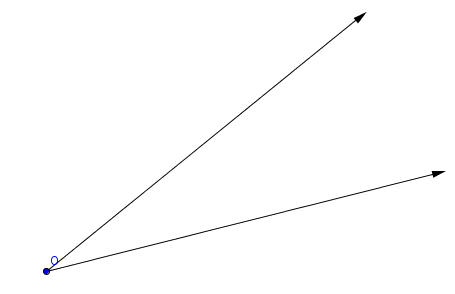
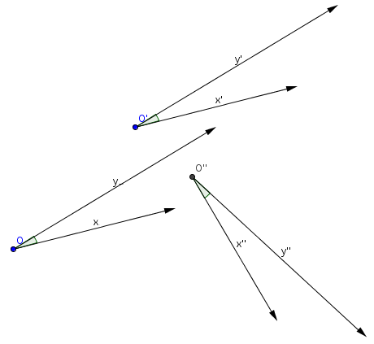
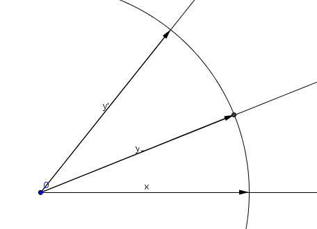
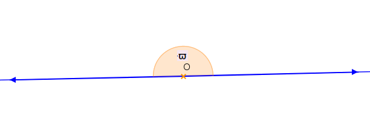
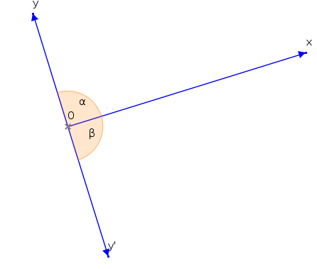
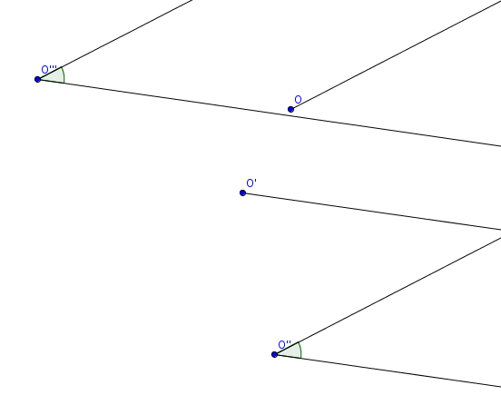
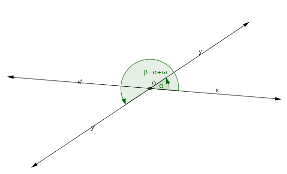

| Choisissez votre langue ! | Choose your language ! |
Demi-droites
Soit D une droite dans un espace affine quelconque, O un point de cette droite et \( \displaystyle \overrightarrow{u} \) un vecteur directeur. Les points de D sont caractérisés par leur paramétre dans une liée au repère \( \displaystyle R=\left ( O,\overrightarrow{u} \right ) \) . Let D be a line in any affine space, O a point on this line and
\( \displaystyle \overrightarrow{u} \)
a directing vector. The points of D are characterized by their parameter in an linked to
\( \displaystyle R=\left ( O,\overrightarrow{u} \right ) \)
.
définition 1
On définit la
'demi-droite positive'
comme le sous-ensemble de D formé des points M de paramètre λ > 0, c'est à dire l'ensemble des points M définis par
\( \displaystyle \overrightarrow{OM}=\lambda \overrightarrow{u} \)
avec λ ≥ 0. On définit de la même façon la 'demi-droite négative' d'origine O.
definition 1
We define the
'positive half-line'
or '
positive ray
' as the subset of D consisting of the points M with parameter λ > 0, that is to say the set of points M defined by
\( \displaystyle \overrightarrow{OM}=\lambda \overrightarrow{u} \)
with λ ≥ 0. We define in the same way the 'negative half-line' with origin O.
Nous nous intéressons particulièrement à la figure formée par deux demi-droites de même origine.
We are particularly interested in the figure formed by two half-lines (rays) with the same origin.

Formellement un tel objet correspond à un et se notera donc (Ox,Oy).
On se place dans le plan affine euclidien orienté P.
Considérons maintenant sur l'ensemble de tels objets la relation binaire suivante :
(Ox,Oy) ≡ (O'x',O'y') si et seulement si il existe un f de P tel que f(Ox)=O'x' et f(Oy)=O'y'.
Trois couples équivalents :
On se place dans le plan affine euclidien orienté P.
Considérons maintenant sur l'ensemble de tels objets la relation binaire suivante :
(Ox,Oy) ≡ (O'x',O'y') si et seulement si il existe un f de P tel que f(Ox)=O'x' et f(Oy)=O'y'.
Trois couples équivalents :
Formally such an object corresponds to an and will therefore be noted (Ox,Oy).
We place ourselves in the affine oriented Euclidean plane P.
Let us now consider the following binary relation on the set of such objects:
(Ox,Oy) ≡ (O'x',O'y') if and only if there is an f of P such that f(Ox)=O'x' and f(Oy)=O'y'.
Three equivalent couples:
We place ourselves in the affine oriented Euclidean plane P.
Let us now consider the following binary relation on the set of such objects:
(Ox,Oy) ≡ (O'x',O'y') if and only if there is an f of P such that f(Ox)=O'x' and f(Oy)=O'y'.
Three equivalent couples:

Nous affirmons que :
We affirm that:
propriété 1
Cette relation est une .
property 1
This relation is an .
La preuve est évidente.
Angles orientés
The proof is obvious.
Oriented angles
définition 2
Nous appelons
'angle orienté'
une pour cette relation. La classe (l'angle) de (Ox,Oy) sera notée \( \displaystyle \widehat{\left ( Ox,Oy \right )} \) .
definition 2
We call
'oriented angle'
an for this relation. The class (angle) of (Ox,Oy) will be noted \( \displaystyle \widehat{\left ( Ox,Oy \right )} \) .
Voyons maintenant un résultat important.
Let us now look at an important result.
théorème 1
Il existe une bijetcion du groupe des du plan sur l'ensemble des angles.
theorem 1
There is a bijection of the group of of the plane onto the set of angles.
Pour ce résultat nous avons besoin du lemme suivant :
For this result we need the following lemma:
lemme 1
Soient Ox et Oy deux demi-droites, il existe un déplacement et un seul transformant Ox en Oy.
lemma 1
Let Ox and Oy be two half-lines, there is one and only one proper isometry transforming Ox into Oy.
En effet tout déplacement transformant Ox en Oy laisse forcément fixe le point O.
Soit alors A un point de Ox tel que \( \displaystyle \overrightarrow{OA} \) soit unitaire et B ∈ Oy tel que \( \displaystyle \overrightarrow{OB} \) soit unitaire aussi.
Alors tout déplacement transformant Ox en Oy doit transformer A en B.
Cela dit il n'existe qu'un seul déplacement transformant deux points distincts en deux autres points distincts équidistants.
Soient maintenant (Ox,Oy) et (O'x',O'y') deux couples représentant un même angle.
Soit d le déplacement transformant (Ox,Oy) en (O'x',O'y').
Soit r le déplacement transformant Ox en Oy.
Soit r' le déplacement transformant O'x' en O'y'.
On a alors nécessairement r'=dorod-1
Soient maintenant R,R' et D les matrices des applications linéaires associées à r,r' et d relativement à n'importe quelle base orthonormée du plan.
On a R'=DRD-1 les 4 matrices sont des matrices de rotations vectorielles, donc : \( \displaystyle R = \begin{pmatrix} a & {- b} \\ b & a \\ \end{pmatrix} \) \( \displaystyle D = \begin{pmatrix} x & {- y} \\ y & x \\ \end{pmatrix} \) \( \displaystyle D^{- 1} = \begin{pmatrix} x & y \\ {- y} & x \\ \end{pmatrix} \)
avec a2+b2=1 et x2+y2=1
Le calcul donne R'=R.
On en déduit que l'application qui à un couple (Ox,Oy) associe la rotation vectorielle associée à l'unique déplacement transformant Ox en Oy est compatible avec la relation d'équivalence définissant les angles.
On vérifie que cette application est .
Elle permet de transporter la structure de (multiplicatif) de l'ensemble des rotations vectorielles sur l'ensemble des angles, cependant la loi sur les angles sera .
En résumé :
Soit alors A un point de Ox tel que \( \displaystyle \overrightarrow{OA} \) soit unitaire et B ∈ Oy tel que \( \displaystyle \overrightarrow{OB} \) soit unitaire aussi.
Alors tout déplacement transformant Ox en Oy doit transformer A en B.
Cela dit il n'existe qu'un seul déplacement transformant deux points distincts en deux autres points distincts équidistants.
Soient maintenant (Ox,Oy) et (O'x',O'y') deux couples représentant un même angle.
Soit d le déplacement transformant (Ox,Oy) en (O'x',O'y').
Soit r le déplacement transformant Ox en Oy.
Soit r' le déplacement transformant O'x' en O'y'.
On a alors nécessairement r'=dorod-1
Soient maintenant R,R' et D les matrices des applications linéaires associées à r,r' et d relativement à n'importe quelle base orthonormée du plan.
On a R'=DRD-1 les 4 matrices sont des matrices de rotations vectorielles, donc : \( \displaystyle R = \begin{pmatrix} a & {- b} \\ b & a \\ \end{pmatrix} \) \( \displaystyle D = \begin{pmatrix} x & {- y} \\ y & x \\ \end{pmatrix} \) \( \displaystyle D^{- 1} = \begin{pmatrix} x & y \\ {- y} & x \\ \end{pmatrix} \)
avec a2+b2=1 et x2+y2=1
Le calcul donne R'=R.
On en déduit que l'application qui à un couple (Ox,Oy) associe la rotation vectorielle associée à l'unique déplacement transformant Ox en Oy est compatible avec la relation d'équivalence définissant les angles.
On vérifie que cette application est .
Elle permet de transporter la structure de (multiplicatif) de l'ensemble des rotations vectorielles sur l'ensemble des angles, cependant la loi sur les angles sera .
En résumé :
Indeed any proper isometry transforming Ox into Oy necessarily leaves the point O fixed.
Let A be a point of Ox such that \( \displaystyle \overrightarrow{OA} \) be unitary and B ∈ Oy such that \( \displaystyle \overrightarrow{OB} \) also be unitary.
So any move that transforms Ox into Oy must transform A into B.
That said, there is only one proper isometry transforming two distinct points into two other distinct equidistant points.
Now let (Ox,Oy) and (O'x',O'y') be two pairs representing the same angle.
Let d be the proper isometry transforming (Ox,Oy) into (O'x',O'y').
Let r be the proper isometry transforming Ox into Oy.
Let r' be the proper isometry transforming O'x' into O'y'.
We then necessarily have r'=dorod -1
Let R,R' and D be the matrices of the linear maps associated with r,r' and d relatively to any orthonormal basis of the plane.
We have R'=DRD-1 the 4 matrices are vector rotation matrices, so: \( \displaystyle R = \begin{pmatrix} a & {-b} \\ b&a\\ \end{pmatrix} \) \( \displaystyle D = \begin{pmatrix} x & {-y} \\ y & x \\ \end{pmatrix} \) \( \displaystyle D^{- 1} = \begin{pmatrix} x&y\\ {- y } & x \\ \end{pmatrix} \)
with a2+b2=1 and x2+y2=1
The calculation gives R'=R.
We deduce that the map which to a couple (Ox,Oy) associates the vectorial rotation associated with the unique proper isometry transforming Ox into Oy is compatible with the equivalence relation defining the angles.
We check that this mapping is .
It allows to transport the structure of (multiplicative) of the set of vector rotations on the set of angles, however the law on the angles will be .
In summary :
Let A be a point of Ox such that \( \displaystyle \overrightarrow{OA} \) be unitary and B ∈ Oy such that \( \displaystyle \overrightarrow{OB} \) also be unitary.
So any move that transforms Ox into Oy must transform A into B.
That said, there is only one proper isometry transforming two distinct points into two other distinct equidistant points.
Now let (Ox,Oy) and (O'x',O'y') be two pairs representing the same angle.
Let d be the proper isometry transforming (Ox,Oy) into (O'x',O'y').
Let r be the proper isometry transforming Ox into Oy.
Let r' be the proper isometry transforming O'x' into O'y'.
We then necessarily have r'=dorod -1
Let R,R' and D be the matrices of the linear maps associated with r,r' and d relatively to any orthonormal basis of the plane.
We have R'=DRD-1 the 4 matrices are vector rotation matrices, so: \( \displaystyle R = \begin{pmatrix} a & {-b} \\ b&a\\ \end{pmatrix} \) \( \displaystyle D = \begin{pmatrix} x & {-y} \\ y & x \\ \end{pmatrix} \) \( \displaystyle D^{- 1} = \begin{pmatrix} x&y\\ {- y } & x \\ \end{pmatrix} \)
with a2+b2=1 and x2+y2=1
The calculation gives R'=R.
We deduce that the map which to a couple (Ox,Oy) associates the vectorial rotation associated with the unique proper isometry transforming Ox into Oy is compatible with the equivalence relation defining the angles.
We check that this mapping is .
It allows to transport the structure of (multiplicative) of the set of vector rotations on the set of angles, however the law on the angles will be .
In summary :
définition 3
La
'somme'
des angles
\( \displaystyle \widehat{\left ( Ox,Oy \right )} \)
et
\( \displaystyle \widehat{\left ( O'x',O'y' \right )} \)
admet pour représentant tout couple (O"x",O"y") tel que la rotation vectorielle associée au déplacement amenant O"x" sur O"y" est égale au produit de la rotation vectorielle associée au déplacement amenant Ox sur Oy par la rotation vectorielle associée au déplacement amenant O'x' sur O'y'.
definition 3
The
'sum'
of the angles
\( \displaystyle \widehat{\left ( Ox,Oy \right )} \)
And
\( \displaystyle \widehat{\left ( O'x',O'y' \right )} \)
admits as a representative any couple (O"x",O"y") such that the vector rotation associated with the proper isometry bringing O"x" onto O"y" is equal to the product of the vector rotation associated with the proper isometry bringing Ox onto Oy by the vector rotation associated with the proper isometry bringing O'x' to O'y'.
propriété 2
En particulier si O=O' et Oy=Ox'. Un représentant de la somme \( \displaystyle \widehat{\left ( Ox,Oy \right )}+\widehat{\left ( Oy,O' \right )} \) est (Ox,Oy').
C'est ce qu'on appelle la 'relation de Chasles' pour les angles :
\( \displaystyle \widehat{\left ( Ox,Oy \right )}+\widehat{\left ( Oy,Oy' \right )}=\widehat{\left ( Ox,Oy' \right )} \)
property 2
In particular if O=O' and Oy=Ox'. A representative of the sum \( \displaystyle \widehat{\left ( Ox,Oy \right )}+\widehat{\left ( Oy,O' \right )} \) is (Ox,Oy').
This is called the 'Chasles relation' for angles:
\( \displaystyle \widehat{\left ( Ox,Oy \right )}+\widehat{\left ( Oy,Oy' \right )}=\widehat{\left ( Ox,Oy' \right )} \)

propriété 3
Il résulte en particulier de la relation de Chasles que : - \( \displaystyle \widehat{\left ( Ox,Ox \right )}=0 \)
- \( \displaystyle \widehat{\left ( Ox,Oy \right )}=-\widehat{\left ( Oy,Ox \right )} \)
property 3
It results in particular from the relation of Chasles that: - \( \displaystyle \widehat{\left ( Ox,Ox \right )}=0 \)
- \( \displaystyle \widehat{\left ( Ox,Oy \right )}=-\widehat{\left ( Oy,Ox \right )} \)
Angles particuliers
Special angles
propriété 4
L'angle nul a exactement deux 'moitiés'.
property 4
The null angle has exactly two 'halves'.
En effet quand on cherche les matrices orthogonales du type
\( \displaystyle R = \begin{pmatrix} a & {- b} \\ b & a \\ \end{pmatrix} \)
vérifiant
\( \displaystyle R^{2} = \begin{pmatrix} 1 & 0 \\ 0 & 1 \\ \end{pmatrix} \)
On trouve les deux matrices
\( \displaystyle R_{1} = \begin{pmatrix} 1 & 0 \\ 0 & 1 \\ \end{pmatrix} \)
et
\( \displaystyle R_{2} = \begin{pmatrix} {- 1} & 0 \\ 0 & {- 1} \\ \end{pmatrix} \)
La première correspond à l'application identique (angle nul).
La seconde correspond à une symétrie centrale (angle dit 'plat' notation ϖ suivant André Cerezo)
vérifiant
\( \displaystyle R^{2} = \begin{pmatrix} 1 & 0 \\ 0 & 1 \\ \end{pmatrix} \)
On trouve les deux matrices
\( \displaystyle R_{1} = \begin{pmatrix} 1 & 0 \\ 0 & 1 \\ \end{pmatrix} \)
et
\( \displaystyle R_{2} = \begin{pmatrix} {- 1} & 0 \\ 0 & {- 1} \\ \end{pmatrix} \)
La première correspond à l'application identique (angle nul).
La seconde correspond à une symétrie centrale (angle dit 'plat' notation ϖ suivant André Cerezo)
Indeed when one seeks the orthogonal matrices of the type
\( \displaystyle R = \begin{pmatrix} a & {-b} \\ b&a\\ \end{pmatrix} \)
checking
\( \displaystyle R^{2} = \begin{pmatrix} 1 & 0 \\ 0 & 1 \\ \end{pmatrix} \)
We find the two matrices
\( \displaystyle R_{1} = \begin{pmatrix} 1 & 0 \\ 0 & 1 \\ \end{pmatrix} \)
and
\( \displaystyle R_{2} = \begin{pmatrix} {- 1} & 0 \\ 0 & {- 1} \\ \end{pmatrix} \)
The first corresponds to the identical application (zero angle).
The second corresponds to a point reflection (angle called 'flat' ϖ notation according to André Cerezo)
checking
\( \displaystyle R^{2} = \begin{pmatrix} 1 & 0 \\ 0 & 1 \\ \end{pmatrix} \)
We find the two matrices
\( \displaystyle R_{1} = \begin{pmatrix} 1 & 0 \\ 0 & 1 \\ \end{pmatrix} \)
and
\( \displaystyle R_{2} = \begin{pmatrix} {- 1} & 0 \\ 0 & {- 1} \\ \end{pmatrix} \)
The first corresponds to the identical application (zero angle).
The second corresponds to a point reflection (angle called 'flat' ϖ notation according to André Cerezo)

L'angle plat a lui même deux moitiés qu'on appelle des angles
'droits'
et qui correspondent au cas de demi-droites orthogonales.
The straight angle itself has two halves which are called
'right'
angles and which correspond to the case of orthogonal half-lines.

2α=2β=ϖ
Extension à des demi-droites d'origines distinctes.
Soient Ox et O'y deux demi-droites d'origines distinctes O et O' pour tout point O" nous pouvons amener par translation Ox sur une demi-droite O"x" parallèle à Ox et O'y' sur une demi-droite O"y" parallèle à O'y'. Il est alors clair que :Extension to half-lines of distinct origins.
Let Ox and O'y be two half-lines of distinct origins O and O' for any point O" we can bring by translation Ox on a half-line O"x" parallel to Ox and O'y' on a half-line line O"y" parallel to O'y'. It is then clear that:propriété 5
L'angle
\( \displaystyle \widehat{\left ( O''x'',O''y'' \right )} \)
ne dépend pas du point O".
property 5
The angle
\( \displaystyle \widehat{\left ( O''x'',O''y'' \right )} \)
does not depend on the point O".
définition 4
Nous appelerons cet angle l'angle des demi-droites Ox et O'y'.
definition 4
We will call this angle the angle of the half-lines (rays) Ox and O'y'.

Angles non orientés
Nous pouvons refaire tout le travail fait précédemment en changeant la relation d'équivalence entre couples de demi-droites par : (Ox,Oy) ≡ (O'x',O'y') si et seulement si il existe un f de P tel que f(Ox)=O'x' et f(Oy)=O'y'.Mais alors qu'il existe seulement un déplacement qui amène Ox sur Oy il existe deux isométries amenant Ox sur Oy à savoir une rotation affine comme précédemment, mais aussi une par rapport à une du couple des deux droites x'Ox, y'Oy supports de Ox et Oy.
Undirected angles
We can redo all the work done previously by changing the equivalence relation between pairs of half-lines by: (Ox,Oy) ≡ (O'x',O'y') if and only if there is an f of P such that f(Ox)=O'x' and f(Oy)=O'y'.But while there is only one proper isometry that brings Ox to Oy there are two isometries bringing Ox to Oy, namely an affine rotation as before, but also an with respect to a of the couple of the two straight lines x'Ox, y'Oy supports of Ox and Oy.
définition 5
Ce travail conduit à la définition d'une
'angle non orienté'
ou encore
'angle géométrique'
de deux demi-droites Ox et Oy parfois noté
\( \displaystyle \widehat{xOy} \)
.
definition 5
This work leads to the definition of a
'non-oriented angle'
or even
'geometric angle'
of two half-lines Ox and Oy sometimes noted
\( \displaystyle \widehat{xOy} \)
.
Angle d'un couple de droites
On peut naturellement considérer les couples de droites sécantes (Δ Δ') et définir un angle de deux droites comme une classe d'équivalence modulo un déplacement.Mais on peut aussi tirer parti du travail déjà fait pour les demi-droites et remarquer que si Δ et Δ' sont sécantes en O, on peut écrire Δ=x'Ox et Δ'=y'Oy, faisant intervenir quatre demi-droites Ox, Ox', Oy, Oy' deux à deux opposées par le sommet. Tout déplacement amenant Δ sur Δ' amène donc Ox sur une demi droite de Δ' résultat d'une translation de Oy ou de Oy'.
A une translation près ces déplacements sont :
- La rotation amenant Ox sur Oy (angle α)
- La rotation amenant Ox sur Oy' (angle α+ϖ)
Angle of a pair of lines
We can naturally consider the pairs of secant lines (Δ Δ') and define an angle of two lines as an equivalence class modulo a proper isometry.But we can also take advantage of the work already done for the rays and notice that if Δ and Δ' secant at O, we can write Δ=x'Ox and Δ'=y'Oy, involving four half-lines Ox, Ox', Oy, Oy' opposite each other at the vertex. Any move that brings Δ on Δ' therefore brings Ox on a half right of Δ' result of a translation of Oy or Oy'.
Up to a translation, these proper isometrys are:
- The rotation bringing Ox to Oy (angle α)
- The rotation bringing Ox to Oy' (angle α+ϖ)
propriété 6
Un angle de droites correspond à un angle orienté de deux demi-droites à un demi-tour près.
property 6
An angle of lines corresponds to an oriented angle of two half-lines to within a half-turn.

β=α+ϖ|
Création Gilles Dubois - licence CC-BY-SA
Created by Gilles Dubois - licence CC-BY-SA
|
Septembre 2023
September 2023
|
Version mobile Jquery
Mobile Jquery version
|
|